library(dplyr)
library(ggplot2)
library(ggfortify)
library(forecast)
library(fpp2)
library(data.table)
library(TTR)
library(xts)
library(recipes)
library(tidyverse)
library(tidyquant)
library(timetk)
library(sweep)
library(lubridate)
library(fda)
library(readxl)
library(knitr)
library(refund)
library(mgcv)
library(fields)
library(car)
library(gratia)
library(tidyfun)
library(caret)Regresión final
1 Códigos preliminares
En esta sección, se cargan los paquetes necesarios y los datos.
1.1 Paquetes
1.2 Lectura de datos
load("./Data/datos_finales.RData")
load("./Data/datos_AOD_HR.Rdata")
datos_finales# A tibble: 84,483 × 29
canton year epi.week egreso date CCanton Poblacion Tmax_max Tmax_mean
<chr> <dbl> <dbl> <dbl> <date> <dbl> <dbl> <dbl> <dbl>
1 abanga… 2000 1 1 2000-01-03 507 16531 34.1 30.5
2 abanga… 2000 2 1 2000-01-10 507 16536. 34.0 30.8
3 abanga… 2000 3 2 2000-01-17 507 16541. 32.7 30.0
4 abanga… 2000 4 2 2000-01-24 507 16545. 34.9 31.8
5 abanga… 2000 5 0 2000-01-31 507 16550. 35.2 32.3
6 abanga… 2000 6 1 2000-02-07 507 16555. 34.7 32.1
7 abanga… 2000 7 1 2000-02-14 507 16560. 36.3 33.4
8 abanga… 2000 8 1 2000-02-21 507 16564. 35.4 32.4
9 abanga… 2000 9 1 2000-02-28 507 16569. 35.3 31.5
10 abanga… 2000 10 1 2000-03-06 507 16574. 33.6 31.3
# ℹ 84,473 more rows
# ℹ 20 more variables: Tmax_min <dbl>, n_Tmax_Q3 <dbl>, Tmin_min <dbl>,
# Tmin_mean <dbl>, Tmin_max <dbl>, n_Tmin_Q1 <dbl>, amplitude_max_max <dbl>,
# amplitude_max_mean <dbl>, amplitude_max_min <dbl>, amplitude_min_max <dbl>,
# amplitude_min_mean <dbl>, amplitude_min_min <dbl>, n_amplitude_Q3 <dbl>,
# n_amplitude_P90 <dbl>, precip_max_max <dbl>, precip_max_mean <dbl>,
# precip_max_min <dbl>, precip_mean_mean <dbl>, n_precip_max_Q3 <dbl>, …# Remover semana 53
datos_finales <- datos_finales %>% filter(epi.week!=53)2 Análisis de componentes principales funcional
2.1 Hospitalizaciones
Se crea una base con sólo las variables de interés: año, semana epidemiológica y número de hospitalizaciones.
base_fpca <- datos_finales %>% group_by(year, epi.week) %>% summarise(hospitalizaciones = sum(egreso))# Crear una matriz con años como filas y semanas como columnas
base_w <- base_fpca %>%
pivot_wider(names_from = epi.week, values_from = hospitalizaciones) %>%
arrange(year)
Y <- base_w[,-1]
Y <- as.matrix(Y)
dim(Y) [1] 20 52Primero se suavizan las curvas de todos los años en el período de estudio utilizando p-splines. Se modela la relación entre el número de hospitalizaciones y la semana epidemiológica mediante un modelo aditivo generalizado. Para elegir el número de bases funcionales a utilizar se empleó la función k.check. Si devuelve un valor p grande significa que el número de bases son suficientes. La función se aplicó para la estimación de cada año y como se observa en la Tabla 1 todos los valores p fueron grandes para un k = 20.
smooth.curves <- array(0, dim(Y))
pvalues <- c()
n <- nrow(Y)
s <- 1:ncol(Y)
for(j in 1:n){
fit <- gam(Y[j, ] ~ s(s, k = 20, bs = "ps"), method = "REML")
smooth.curves[j, ] <- fit$fitted.values
k_check <- k.check(fit)
pvalues[j] <- k_check[1, "p-value"]
}
valores_p <- data.frame(Año = 2000:2019, Valor_p = pvalues)
kable(valores_p)| Año | Valor_p |
|---|---|
| 2000 | 0.9025 |
| 2001 | 0.8075 |
| 2002 | 0.3300 |
| 2003 | 0.9875 |
| 2004 | 0.7975 |
| 2005 | 0.3575 |
| 2006 | 0.7125 |
| 2007 | 0.9425 |
| 2008 | 0.9300 |
| 2009 | 0.7450 |
| 2010 | 0.7800 |
| 2011 | 0.8900 |
| 2012 | 0.4950 |
| 2013 | 0.3475 |
| 2014 | 0.9025 |
| 2015 | 0.7875 |
| 2016 | 0.8400 |
| 2017 | 0.7100 |
| 2018 | 0.6600 |
| 2019 | 0.7175 |
En la Figura 1 se muestran las covarianzas entre las 52 semanas. Se puede observar que alrededor de las semanas 25 a 55 tienen una covarianza alta. Esto significa que estas semanas tienen varianzas altas consigo mismas y con semanas consecutivas a ellas. En otras palabras, las semanas cercanas están correlacionadas. Además, las zonas con mayor variabilidad van a tener un mayor peso en los componentes funcionales. Por último, las covarianzas altas justifican la aplicación del análisis de componentes principales funcionales.
smooth.cov <- cov(smooth.curves)
df_cov <- melt(smooth.cov)
colnames(df_cov) <- c("Semana_1", "Semana_2", "Covarianza")
ggplot(df_cov, aes(x = Semana_1, y = Semana_2, fill = Covarianza)) +
geom_tile() +
scale_fill_viridis_c(option = "inferno") +
labs(x = "Semana epidemiológica", y = "Semana epidemiológica", fill = "Covarianza") +
theme_minimal() +
coord_fixed()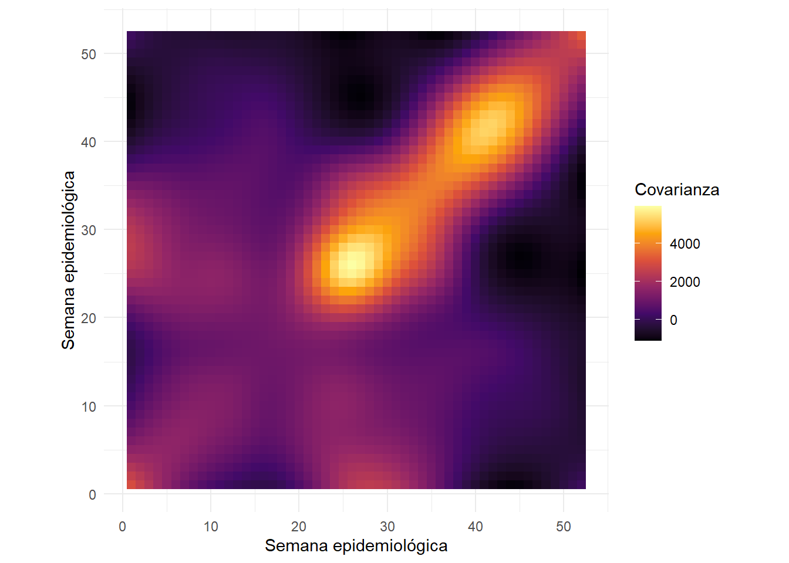
A continuación, para llevar a cabo el análisis de fPCA, utilizando la función fpca.face del paquete refund. El método de estimación que utiliza es el Fast Approximate Covariance Estimation (FACE) introducido por Xiao et al. (2016) . Este método está construido para estimar la matriz de covarianzas en contexto de datos funcionales de gran volumen. El método es útil cuando se tiene muchos datos densamente observados. Una ventaja de esta función es que permite especificar la proporción de varianza explicada para seleccionar el número de componentes principales.
res.face <- fpca.face(Y = Y, center = T, argvals = 1:52, pve = 0.95)
efn.face <- res.face$efunctions*sqrt(52)
eval.face <- res.face$evalues/52# Error
error_face <- mean((res.face$Yhat - Y)^2); error_face[1] 682.3391Una vez aplicado el fPCA, se puede observar que el error cuadrático medio fue de 682,34.
autovalores_suavizados <- rep(0, 52)
ll <- length(res.face$evalues)
p <- 52 # Número de observacion por curva
autovalores_suavizados[1:ll] <- res.face$evalues / p
df_plot <- data.frame(Índice = 1:52, Autovalores = autovalores_suavizados)
ggplot(df_plot, aes(x = Índice, y = Autovalores)) +
geom_line(color = "blue", size = 1.2) +
labs(x = "Índice", y = "Autovalores") +
theme_minimal()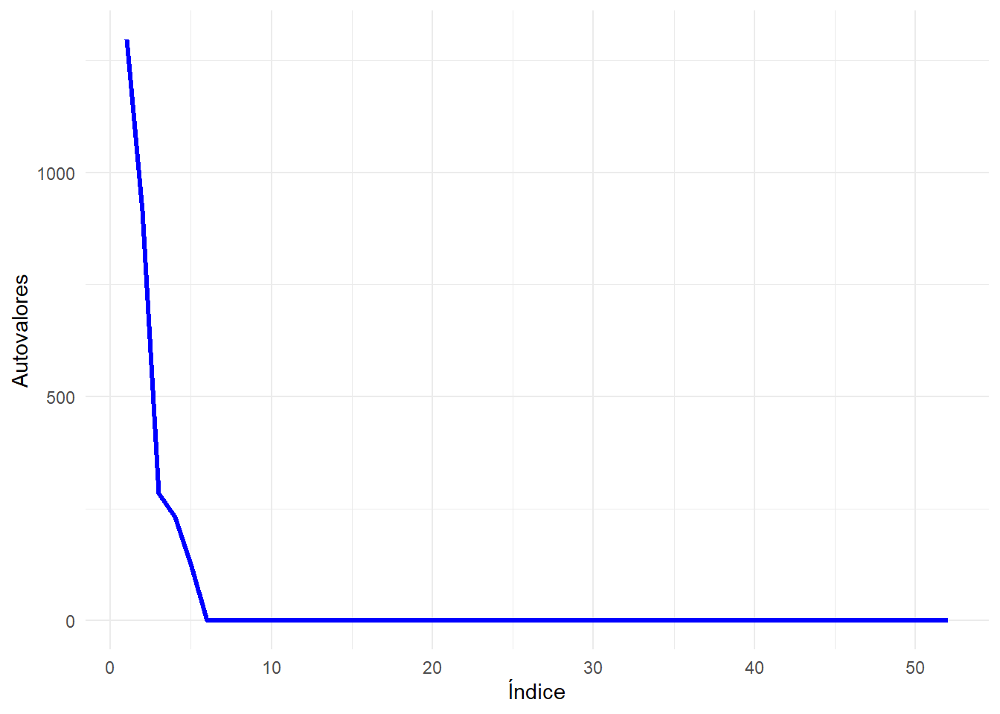
pve.face <- round((cumsum(eval.face)/sum(eval.face))*100,2)
cat("Porcentaje explicado por cada componente:", pve.face)Porcentaje explicado por cada componente: 45.43 77.49 87.46 95.54 100Para la selección del número óptimo de componentes principales a utilizar se puede observar la Figura 2, donde los valores dejan de caer rápidamente y se aplanan alrededor de 3 a 5 componentes. Otro criterio para decidir el número de componentes es el porcentaje de variabilidad acumulada que explica los componentes. Normalmente, se sugiere valores entre 70 y 90%. En este caso con el segundo componente se explica una variabilidad acumulada de 77%. Por último, está el criterio de Kaiser que indica que se incluyen aquellos componentes principales mayores a 1. En el presente caso, los cinco autovalores resultantes fueron mayores a 1 (1296.52, 915.15, 284.46, 230.71 y 127.28). Tomando en cuenta los tres criterios utilizados y debido a que el objetivo de aplicar fPCA es explicar la variabilidad total de las hospitalizaciones, se escoge utilizar los 5 componentes.
df_plot <- data.frame(s = 1:52, efn.face)
x <- c("X1","X2","X3","X4","X5")
for(i in x){
p = ggplot(df_plot, aes(x = s, y = .data[[i]])) +
geom_line(color = "red") +
labs(x = "Semana epidemiológica", y = "")
print(p)}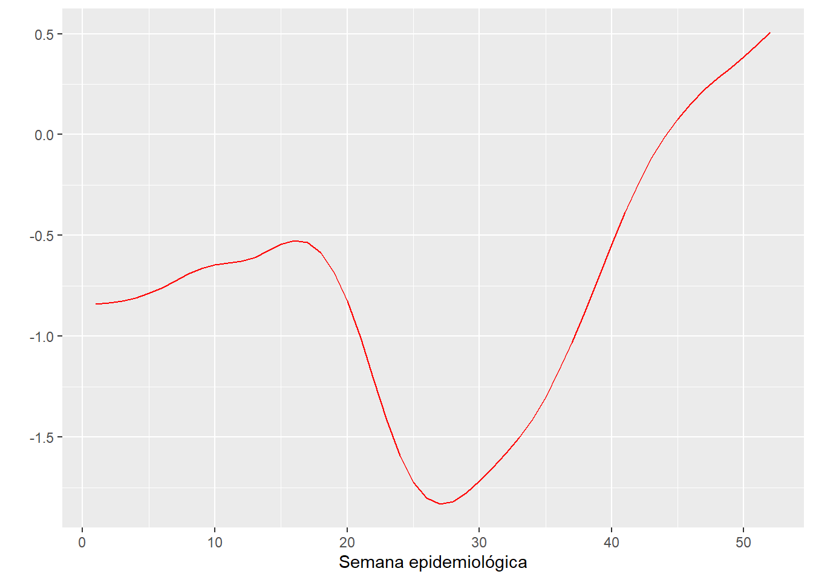
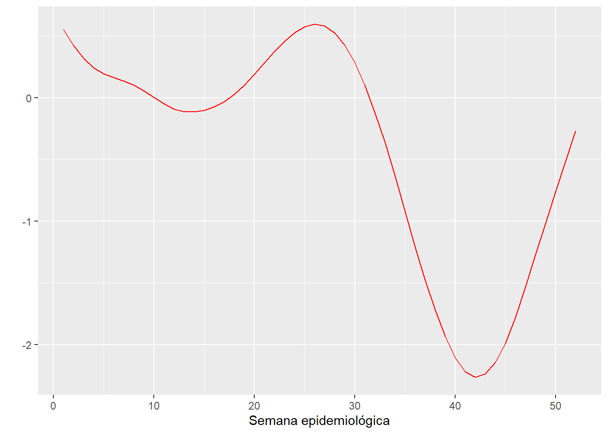
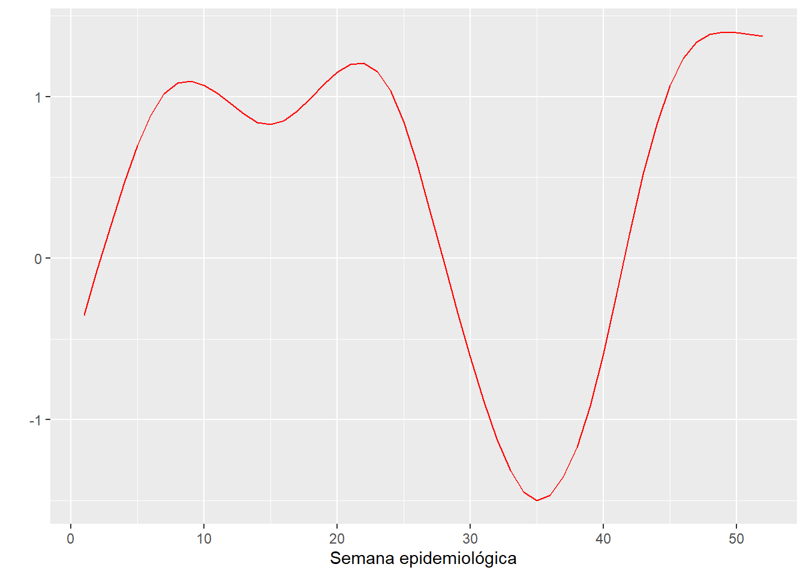
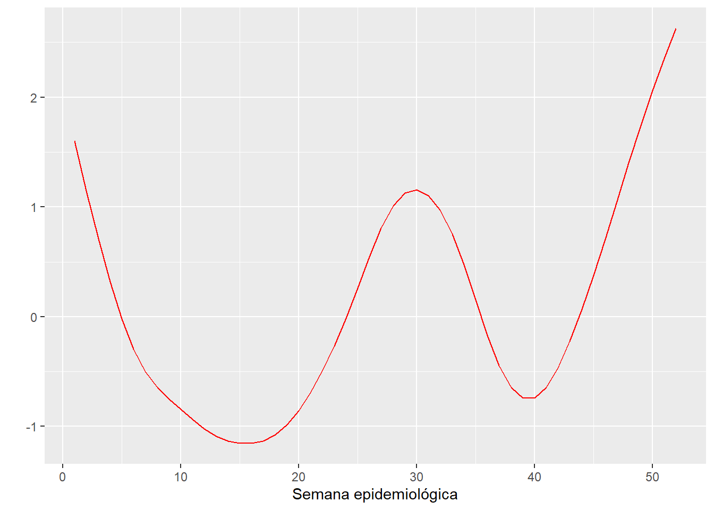
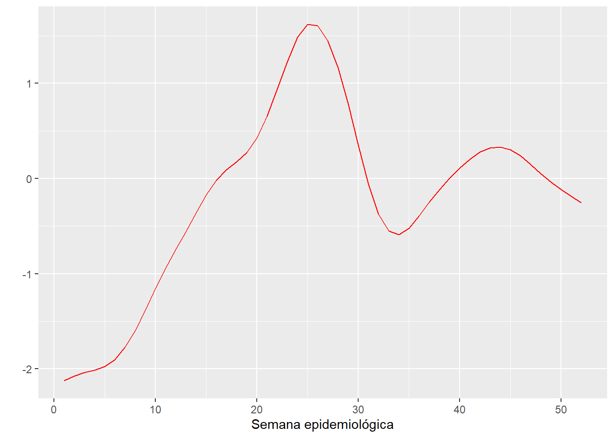
A continuación, en la Figura 3 se muestran las 5 autofunciones calculadas con fpca.face. El primer PC1 es mayormente negativa desde la semana 1 a 45 y muestra una mayor variabilidad en las semanas 20 a 40. Esto sugiere que las diferencias entre los años en estas semanas explican la mayor parte de la variabilidad. Los años con puntajes más negativos tienen un mayor número de egresos hospitalarios durante las semanas 20 a 40.
El PC2 es positiva en las primeras semanas y de la semana 20 a 30 y luego se vuelve fuertemente negativa en las semanas 35 a 50. Años con puntajes negativos pueden tener un mayor número de hospitalizaciones en las semanas 35 a 50 y menor en las semanas 20 a 30. Lo mismo sucede en viceversa.
El PC3 es mayormente positiva de las semanas 5 a 25 y 45 a 50. En esas semanas hay tres picos positivos alrededor de las semanas 10, 20 y 50. Además, se presenta un valle profundo negativo en las semanas 30 a 40. Los años con puntajes positivos tienen un mayor número de hospitalizaciones cuando el PC3 es positiva (semanas 5 a 25 y 45 a 50) y los años con puntajes negativos presentan un mayor número de hospitalizaciones cuando el PC3 es negativo (semanas 30 a 40).
El PC4 captura la variabilidad de las primeras y últimas semanas. Se tiene un pico positivo alrededor de la semana 30 como en los otros componentes, lo cual es de esperarse, debido a que la mayor cantidad de hospitalizaciones se da en esas semanas. Los años con puntajes positivos tienen un mayor número de hospitalizaciones al comienzo y final del año.
El PC5 explica la variabilidad de las semanas 1 a 15 y 20 a 30. En este componente, el peso de las primeras semanas es mucho mayor en comparación a los otros componentes. Los años con puntajes más negativos tienen una mayor cantidad de hospitalizaciones en las primeras semanas.
2.2 Covariables
Se crea una lista con las variables de interés: número de egresos hospitalarios anuales por enfermedades respiratorias, promedio de la temperatura máxima semanal (T.max), promedio de la temperatura mínima semanal (T.min), precipitación media semanal (precip), promedio de la amplitud de la temperatura máxima semanal (amp_max_mean), promedio de la amplitud de la temperatura mínima semanal (amp_min_mean), profundidad óptica de aerosoles semanal (AOD) y humedad relativa semanal (HR).
# Respuesta
week <- 1:52
y <- datos_finales %>% group_by(year,epi.week) %>% summarise(hospitalizaciones = sum(egreso)) %>% pivot_wider(names_from = epi.week, values_from = hospitalizaciones) %>% arrange(year)
y <- as.matrix(y)[,-1]
# Covariables
Tmax_mean <- datos_finales %>% group_by(year, epi.week) %>% summarise(Tmax_mean = mean(Tmax_mean, na.rm = T)) %>% pivot_wider(names_from = epi.week, values_from = Tmax_mean) %>% arrange(year)
Tmax_mean <- as.matrix(Tmax_mean)[,-1]
Tmin_mean <- datos_finales %>% group_by(year, epi.week) %>% summarise(Tmin_mean = mean(Tmin_mean, na.rm = T)) %>% pivot_wider(names_from = epi.week, values_from = Tmin_mean) %>% arrange(year)
Tmin_mean <- as.matrix(Tmin_mean)[,-1]
precip_mean <- datos_finales %>% group_by(year, epi.week) %>% summarise(Precip_mean = mean(precip_mean_mean, na.rm = T)) %>% pivot_wider(names_from = epi.week, values_from = Precip_mean) %>% arrange(year)
precip_mean <- as.matrix(precip_mean)[,-1]
amp_max_mean <- datos_finales %>% group_by(year, epi.week) %>% summarise(amp_max_mean = mean(amplitude_max_mean, na.rm = T)) %>% pivot_wider(names_from = epi.week, values_from = amp_max_mean) %>% arrange(year)
amp_max_mean <- as.matrix(amp_max_mean)[,-1]
amp_min_mean <- datos_finales %>% group_by(year, epi.week) %>% summarise(amp_min_mean = mean(amplitude_min_mean, na.rm = T)) %>% pivot_wider(names_from = epi.week, values_from = amp_min_mean) %>% arrange(year)
amp_min_mean <- as.matrix(amp_min_mean)[,-1]
AOD <- datos_aerosol %>% pivot_wider(names_from = week, values_from = aerosol) %>% arrange(year)
AOD <- as.matrix(AOD)[,-1]
AOD <- scale(AOD, center = T, scale = T)
HR <- datos_HR_finales %>% pivot_wider(names_from = week, values_from = RH) %>% arrange(year)
HR <- as.matrix(HR)[,-1]base <- list()
base$Y <- y
base$Tmax <- Tmax_mean
base$Tmin <- Tmin_mean
base$precip <- precip_mean
base$amp_max_mean <- amp_max_mean
base$amp_min_mean <- amp_min_mean
base$aerosol <- AOD
base$HR <- HR2.2.1 Promedio de la temperatura máxima
fpca_Tmax <- fpca.sc(base$Tmax, pve = 0.99)
cumsum(fpca_Tmax$evalues) / sum(fpca_Tmax$evalues)[1] 0.7663568 0.8484943 0.9224878 0.9535545 0.9823363 0.9924903 1.0000000labels <- c("PC1", "PC2","PC3")
efn.Tmax <- fpca_Tmax$efunctions*sqrt(52)
eval.Tmax <- fpca_Tmax$evalues/52
scores_Tmax <- fpca_Tmax$scores
matplot(1:52, efn.Tmax[,1:3], col=rainbow(3),
type='l', lty=1, lwd=2,
ylab="", xlab="Semana epidemiológica")
legend("topleft",
legend = labels,
col = rainbow(3),
lwd = 1,
cex = 0.8,
bg = NA,
horiz = T,
box.lty = 0)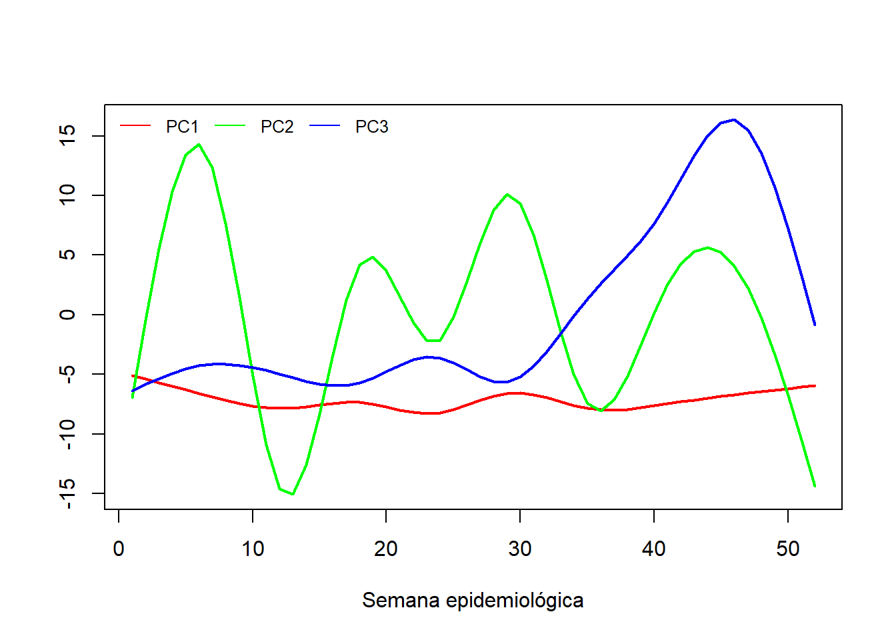
- Como se observa en la Figura 4, el componente toma valores negativos a lo largo de toda la curva. Este componente captura la variabilidad de las semanas 10 a 35, por lo que años con puntajes más negativos presentan temperaturas más altas en promedio durante este período.
plot(1:20,scores_Tmax[,1],
xlab = "Años", ylab = "PC1",
main = "Temperatura máxima - PC1",
pch = 16, col = "blue")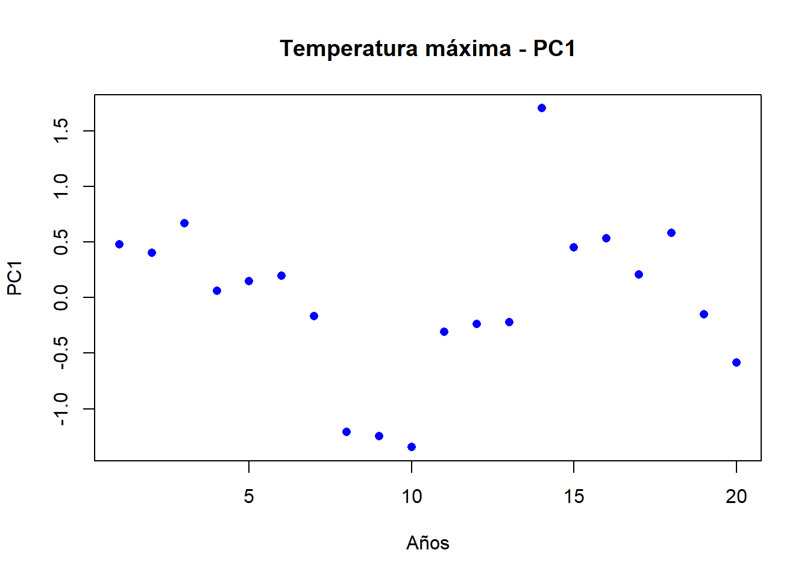
plot(rowMeans(base$Tmax), scores_Tmax[,1], type = "p", pch = 15, xlab = "Temperatura máxima media anual", ylab = "Score - PC1")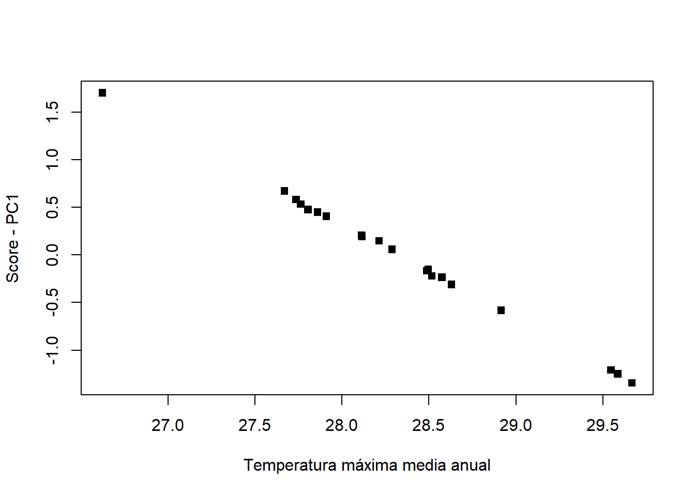
- Años con scores más negativos presentan temperaturas más altas en el primer componente.
plot(rowMeans(base$Tmax), scores_Tmax[,2], type = "p", pch = 15, xlab = "Temperatura máxima media anual", ylab = "Score - PC2")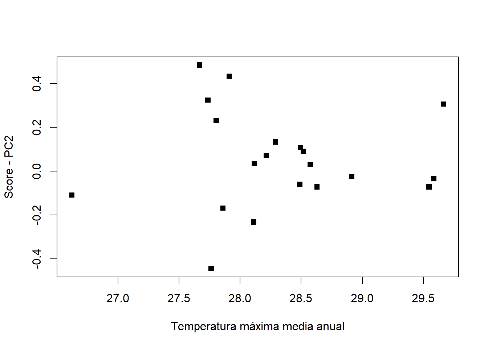
- Debido al comportamiento de los scores y su relación con el segundo componente, este no se puede interpretar o su interpretación es compleja.
2.2.2 Promedio de temperatura mínima
fpca_Tmin <- fpca.sc(base$Tmin, pve = 0.99)
cumsum(fpca_Tmin$evalues) / sum(fpca_Tmin$evalues)[1] 0.7340312 0.9007604 0.9572727 0.9779278 0.9928241 1.0000000labels <- c("PC1","PC2")
efn.Tmin <- fpca_Tmin$efunctions*sqrt(52)
eval.Tmin <- fpca_Tmin$evalues/52
scores_Tmin <- fpca_Tmin$scores
matplot(1:52, efn.Tmin[,1:3], col=rainbow(3),
type='l', lty=1, lwd=2,
ylab="", xlab="Semana epidemiológica")
legend("topleft",
legend = labels,
col = rainbow(3),
lwd = 1,
cex = 0.8,
bg = NA,
horiz = T,
box.lty = 0)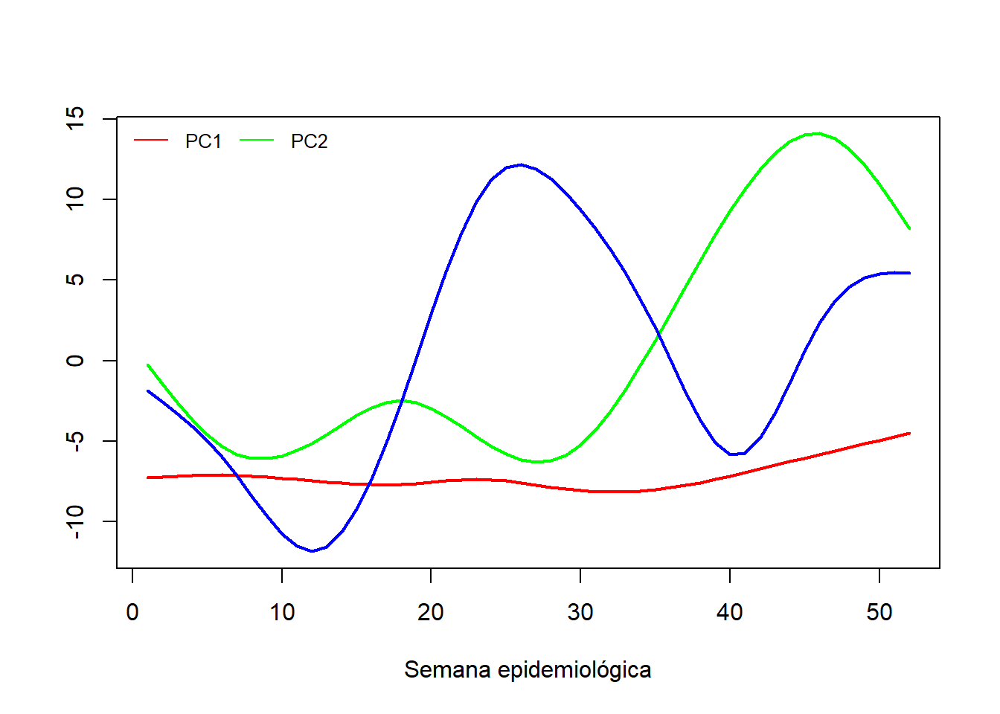
- Como se observa en la Figura 5, el primer componente principal es completamente negativo y captura la variabilidad de las semanas 1 a 40. Años con puntajes más negativos presentan en promedio temperaturas mínimas más altas.
plot(scores_Tmin[,1], scores_Tmin[,2],
xlab = "PC1", ylab = "PC2",
main = "Temperatura mínima - PC1 vs PC2",
pch = 16, col = "blue")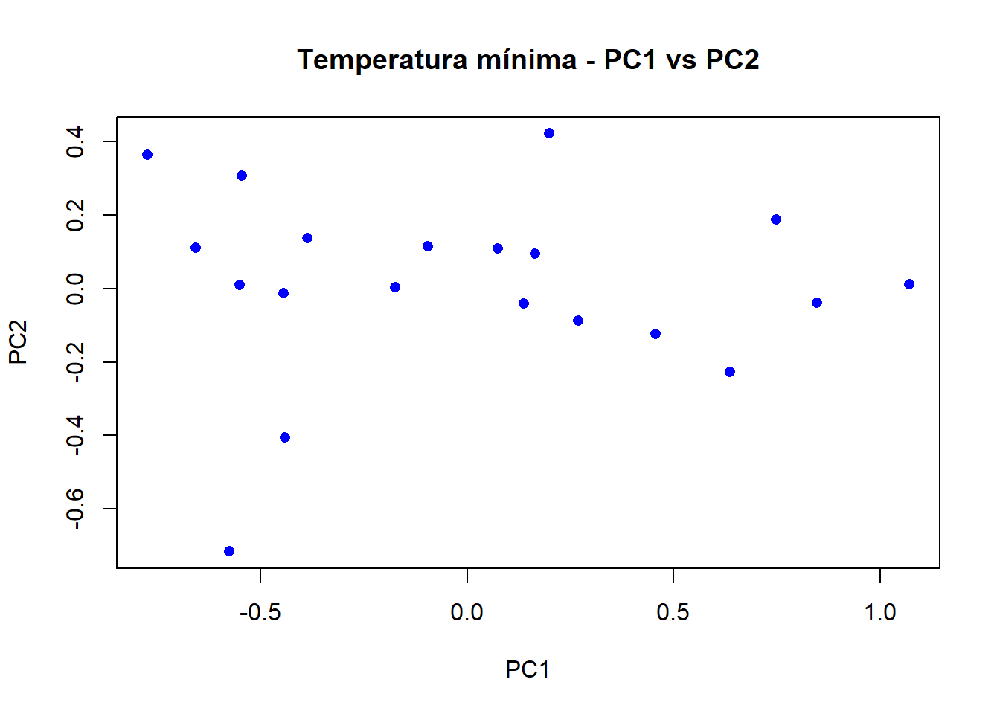
plot(rowMeans(base$Tmin), scores_Tmin[,1], type = "p", pch = 15, xlab = "Temperatura mínima media anual", ylab = "Score - PC1")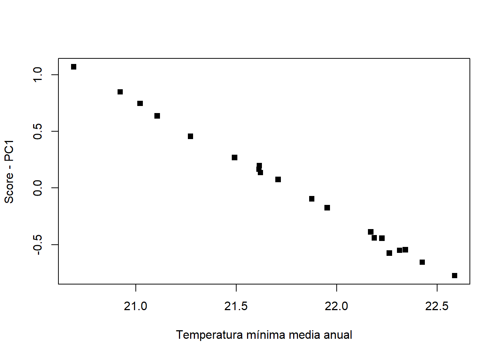
- Un mayor puntaje indica un aumento promedio de la temperatura mínima para el primer componente.
plot(rowMeans(base$Tmin), scores_Tmin[,2], type = "p", pch = 15, xlab = "Temperatura mínima media anual", ylab = "Score - PC2")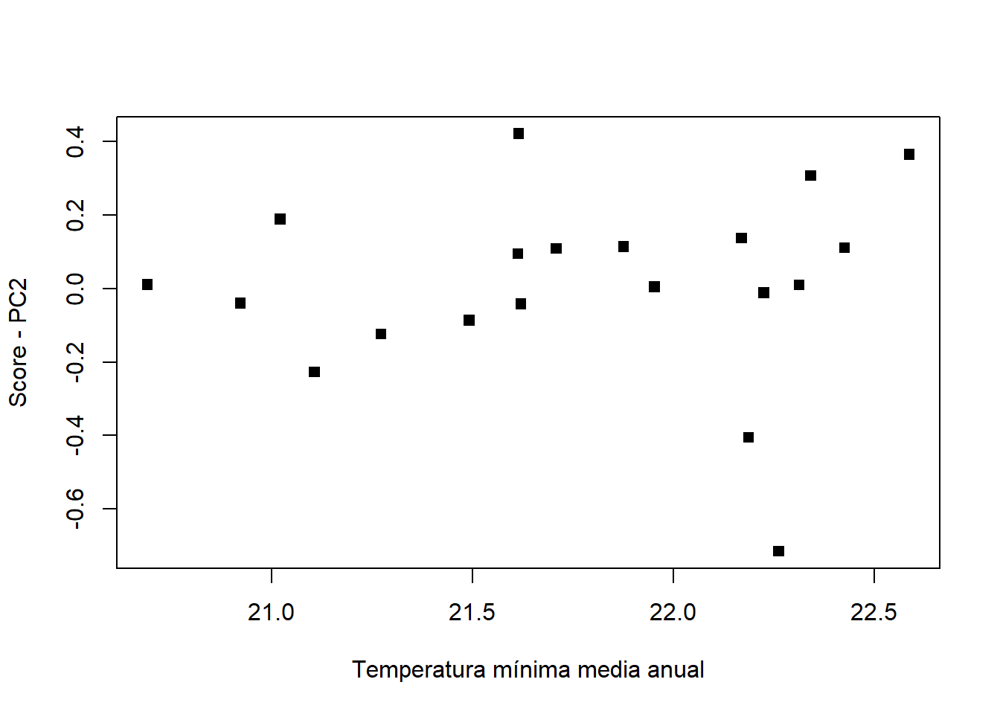
- Debido al comportamiento de los scores y su relación con el segundo componente, este no se puede interpretar o su interpretación es compleja.
2.2.3 Precipitación media
fpca_precip <- fpca.sc(base$precip, pve = 0.99)
cumsum(fpca_precip$evalues) / sum(fpca_precip$evalues)[1] 0.9715178 1.0000000labels <- c("PC1","PC2")
efn.precip <- fpca_precip$efunctions*sqrt(52)
eval.precip <- fpca_precip$evalues/52
scores_precip <- fpca_precip$scores
matplot(1:52, efn.precip[,1:2], col=rainbow(3),
type='l', lty=1, lwd=2,
ylab="", xlab="Semana epidemiológica")
legend("topleft",
legend = labels,
col = rainbow(3),
lwd = 1,
cex = 0.8,
bg = NA,
horiz = T,
box.lty = 0)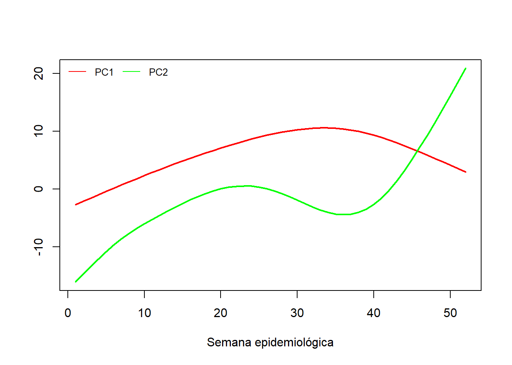
- Como se observa en la Figura 6, el componente toma valores negativos en las semanas 1 a 5 y valores positivos de la semana 5 en adelante. El componente captura el mayor porcentaje de variabilidad en las semanas 25 a 40. Por lo que años con puntajes más positivos presentan más lluvias durante estas semanas.
plot(1:20,scores_precip[,1],
xlab = "Años", ylab = "PC1",
main = "Precipitación - PC1",
pch = 16, col = "blue")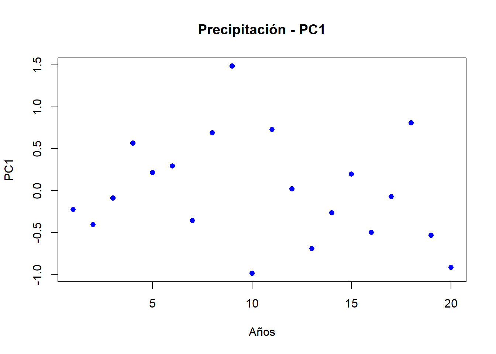
plot(rowMeans(base$precip), scores_precip[,1], type = "p", pch = 15, xlab = "Precipitación media anual", ylab = "Score - PC1")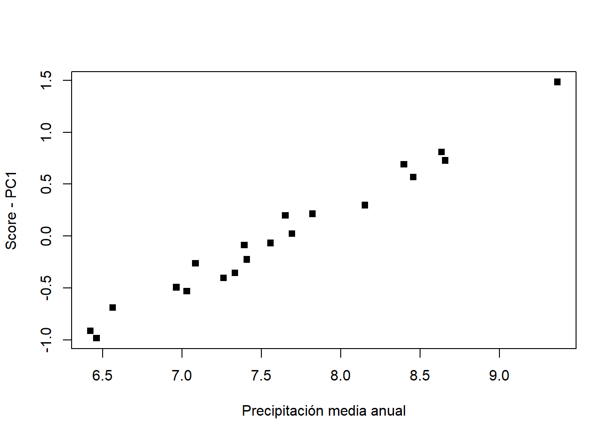
- Un mayor puntaje indica un aumento promedio de la precipitación para el primer componente.
plot(rowMeans(base$precip), scores_precip[,2], type = "p", pch = 15, xlab = "Precipitación media anual", ylab = "Score - PC2")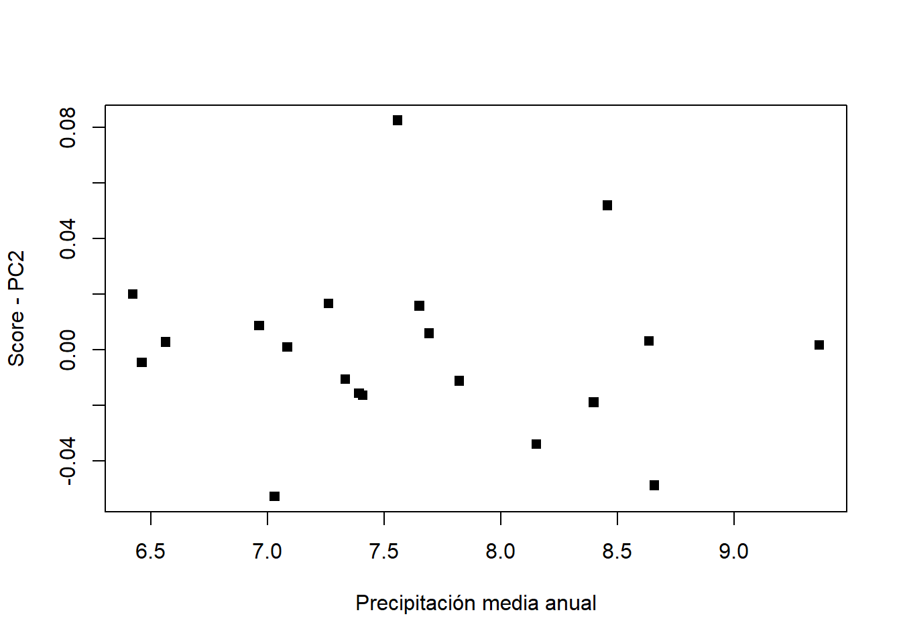
- Debido al comportamiento de los scores y su relación con el segundo componente, este no se puede interpretar o su interpretación es compleja.
2.2.4 Amplitud promedio de la temperatura máxima
fpca_amp_max <- fpca.sc(base$amp_max_mean, pve = 0.99)
cumsum(fpca_amp_max$evalues) / sum(fpca_amp_max$evalues) [1] 0.7036308 0.8256358 0.9184497 0.9449876 0.9694203 0.9871582 1.0000000labels <- c("PC1", "PC2", "PC3")
efn.amp_max <- fpca_amp_max$efunctions*sqrt(52)
eval.amp_max <- fpca_amp_max$evalues/52
scores_amp_max <- fpca_amp_max$scores
matplot(1:52, efn.amp_max[,1:3], col=rainbow(3),
type='l', lty=1, lwd=2,
ylab="", xlab="Semana epidemiológica")
legend("topleft",
legend = labels,
col = rainbow(3),
lwd = 1,
cex = 0.8,
bg = NA,
horiz = T,
box.lty = 0)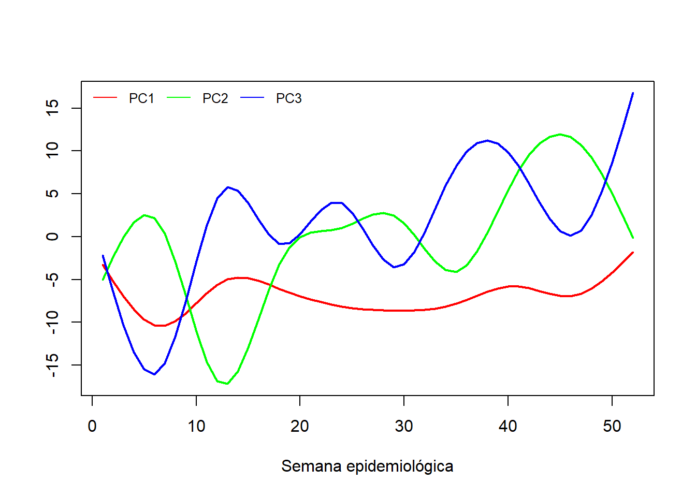
- Como se observa en la Figura 7, el primer componente es negativo a lo largo de toda su curva y captura la variabilidad de las semanas 1 a 15 y 20 a 40. Años con puntajes más negativos presentan una mayor amplitud entre el promedio de la temperatura máxima.
plot(scores_amp_max[,1], scores_amp_max[,2],
xlab = "PC1", ylab = "PC2",
main = "Amplitud de la temperatura máxima - PC1 vs PC2",
pch = 16, col = "blue")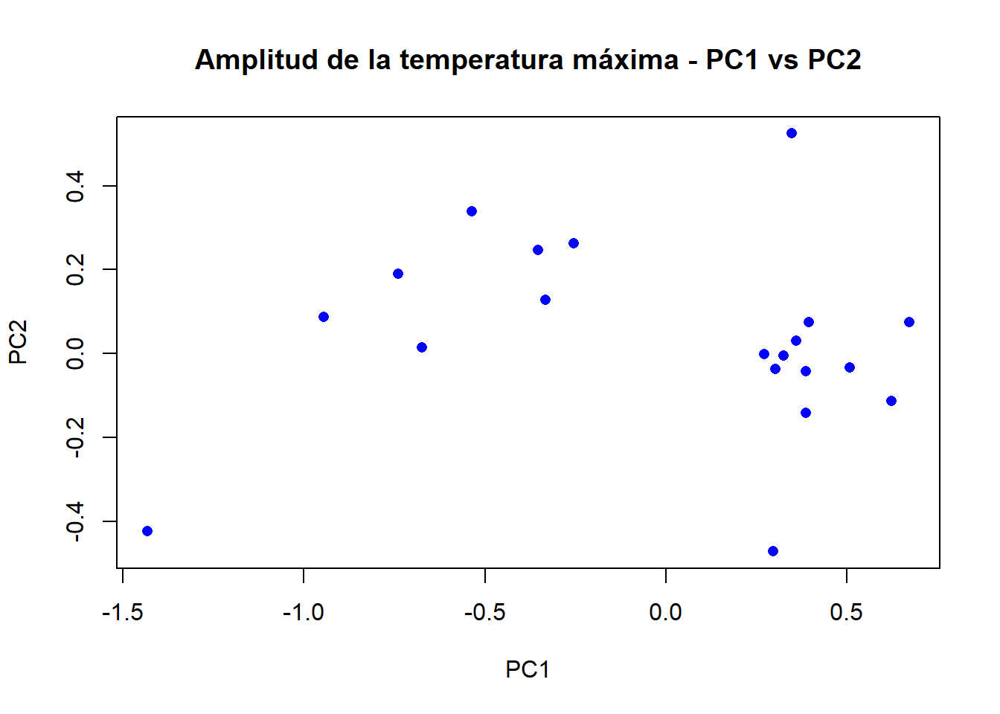
plot(rowMeans(base$amp_max_mean), scores_amp_max[,1], type = "p", pch = 15, xlab = "Amplitud de la temperatura máxima media anual", ylab = "Score - PC1")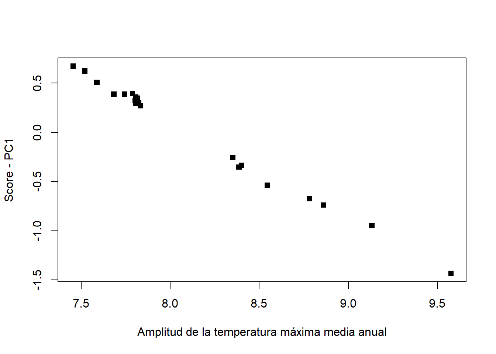
- Un mayor puntaje indica una menor amplitud promedio de la temperatura máxima para el primer componente.
plot(rowMeans(base$amp_max_mean), scores_amp_max[,2], type = "p", pch = 15, xlab = "Amplitud de la temperatura máxima media anual", ylab = "Score - PC2")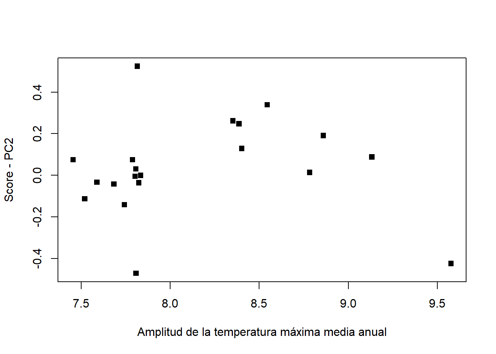
- Debido al comportamiento de los scores y su relación con el segundo componente, este no se puede interpretar o su interpretación es compleja.
2.2.5 Amplitud promedio de la temperatura mínima
fpca_amp_min <- fpca.sc(base$amp_min_mean, pve = 0.99)
cumsum(fpca_amp_min$evalues) / sum(fpca_amp_min$evalues) [1] 0.7041089 0.8431517 0.9226262 0.9560373 0.9834391 1.0000000labels <- c("PC1", "PC2", "PC3")
efn.amp_min <- fpca_amp_min$efunctions*sqrt(52)
eval.amp_min <- fpca_amp_min$evalues/52
scores_amp_min <- fpca_amp_min$scores
matplot(1:52, efn.amp_min[,1:3], col=rainbow(3),
type='l', lty=1, lwd=2,
ylab="", xlab="Semana epidemiológica")
legend("topleft",
legend = labels,
col = rainbow(3),
lwd = 1,
cex = 0.8,
bg = NA,
horiz = T,
box.lty = 0)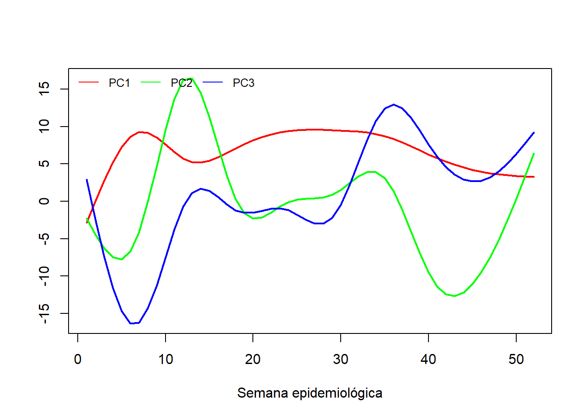
- Como se observa en la Figura 8, el primer componente es postivo para la mayoría de las semanas, con excepción del inicio. Este componente captura la variabilidad de las semanas 5 a 10 y 20 a 35. Años con puntajes más postivos presentan una mayor amplitud entre la media de la temperatura mínima para estas semanas.
plot(scores_amp_min[,1], scores_amp_min[,2],
xlab = "PC1", ylab = "PC2",
main = "Amplitud de la temperatura mínima - PC1 vs PC2",
pch = 16, col = "blue")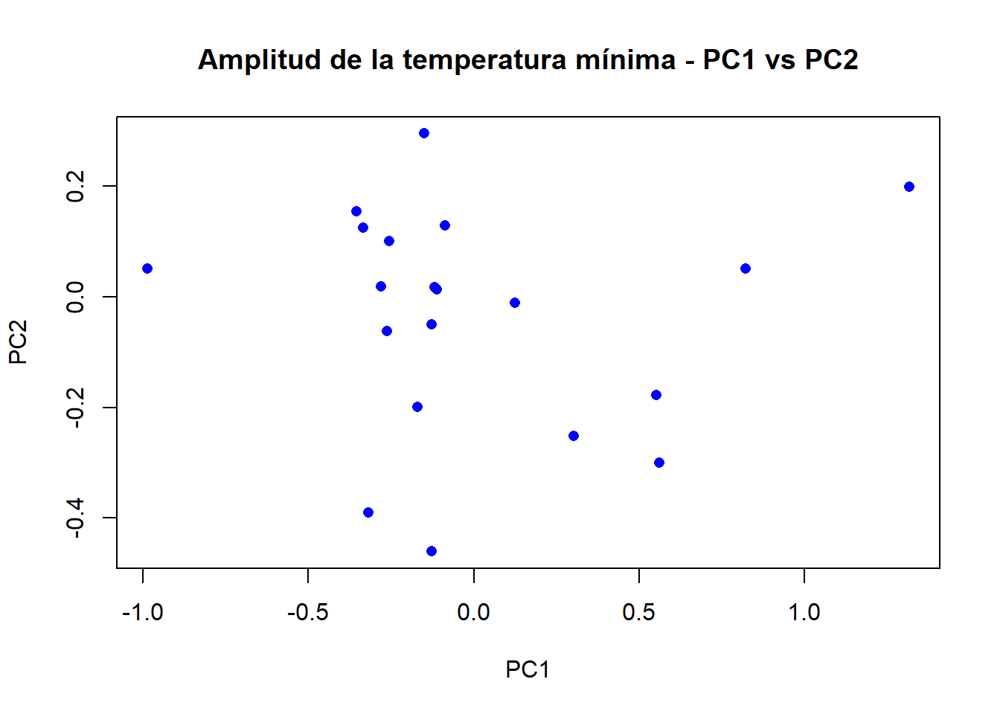
plot(rowMeans(base$amp_min_mean), scores_amp_min[,1], type = "p", pch = 15, xlab = "Amplitud de la temperatura mínima media anual", ylab = "Score - PC1")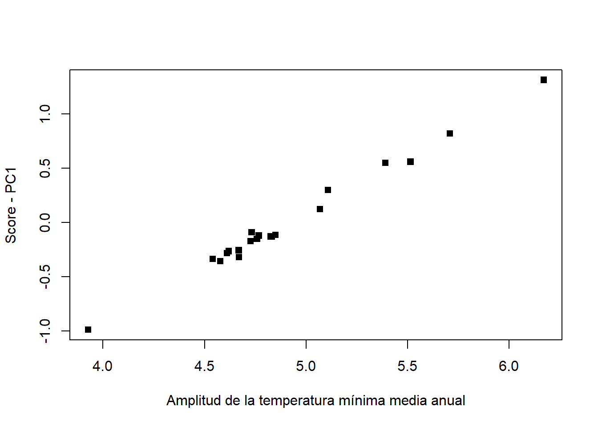
- Un mayor puntaje indica una mayor amplitud promedio de la temperatura mínima para el primer componente.
plot(rowMeans(base$amp_min_mean), scores_amp_min[,2], type = "p", pch = 15, xlab = "Amplitud de la temperatura mínima media anual", ylab = "Score - PC2")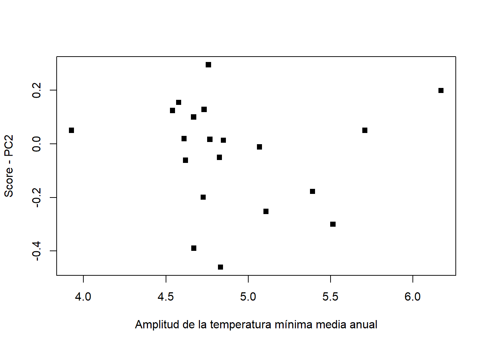
- Debido al comportamiento de los scores y su relación con el segundo componente, este no se puede interpretar o su interpretación es compleja.
2.2.6 Aerosol
fpca_aerosol <- fpca.sc(base$aerosol, pve = 0.99)
cumsum(fpca_aerosol$evalues) / sum(fpca_aerosol$evalues)[1] 0.4670993 0.7994166 0.9282960 0.9877597 1.0000000labels <- c("PC1", "PC2", "PC3")
efn.aerosol <- fpca_aerosol$efunctions*sqrt(52)
eval.aerosol <- fpca_aerosol$evalues/52
scores_aerosol <- fpca_aerosol$scores
matplot(1:52, efn.aerosol[,1:3], col=rainbow(3),
type='l', lty=1, lwd=2,
ylab="", xlab="Semana epidemiológica")
legend("topleft",
legend = labels,
col = rainbow(3),
lwd = 1,
cex = 0.8,
bg = NA,
horiz = T,
box.lty = 0)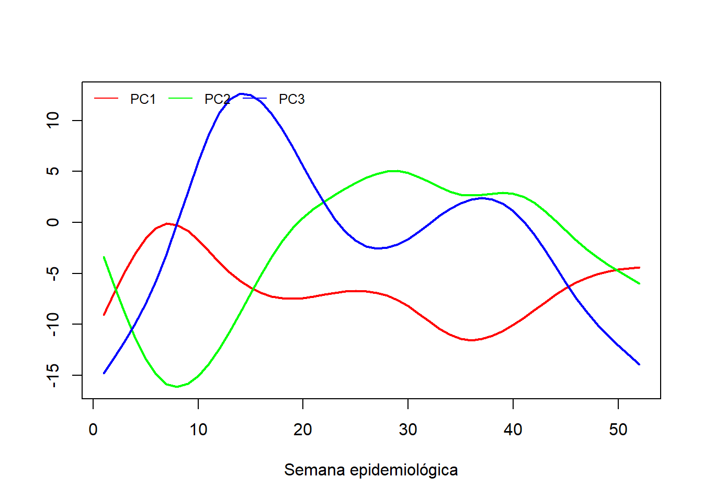
- Como se observa en la Figura 9, el primer componente toma valores negativos a lo largo de las 52 semanas y captura la variabilidad de las semanas 30 a 45. Años con puntajes más negativos presentan mayores niveles de AOD en estas semanas.
plot(scores_aerosol[,1], scores_aerosol[,2],
xlab = "PC1", ylab = "PC2",
main = "Aerosol - PC1 vs PC2",
pch = 16, col = "blue")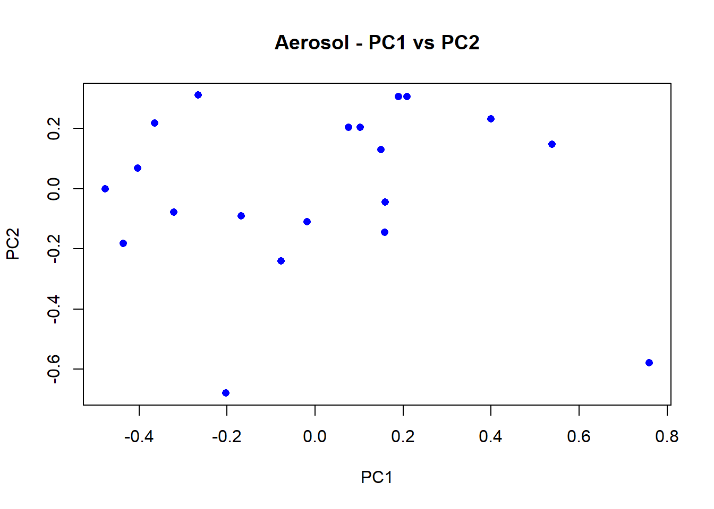
plot(rowMeans(base$aerosol), scores_aerosol[,1], type = "p", pch = 15, xlab = "AOD media anual", ylab = "Score - PC1") #Estandarizado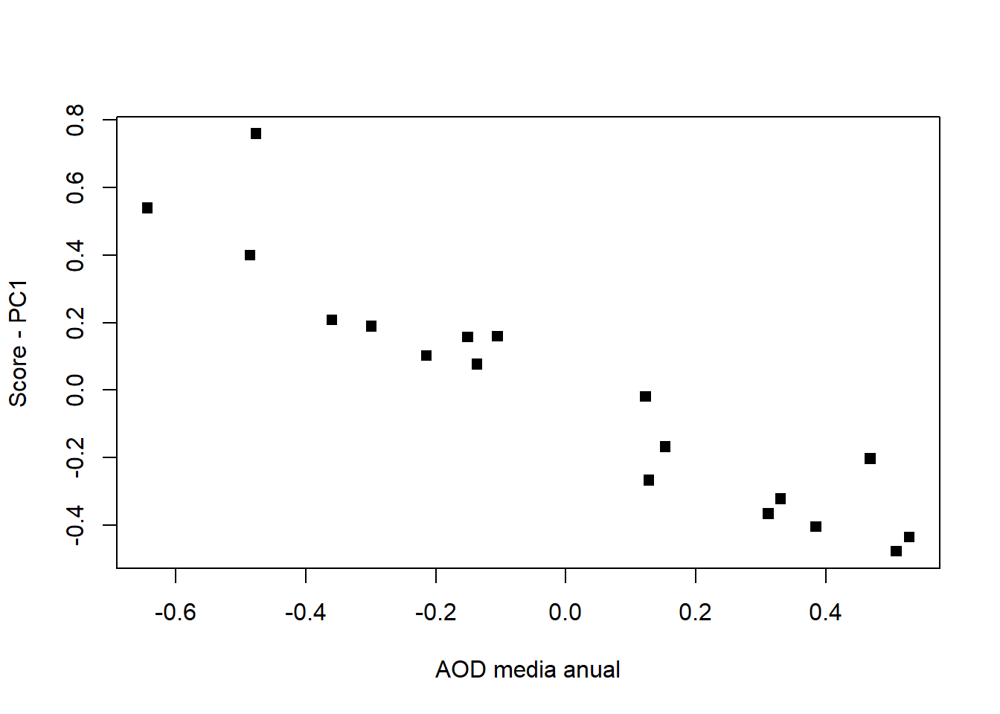
- Un mayor puntaje indica menores niveles de AOD para el primer componente.
plot(rowMeans(base$aerosol), scores_aerosol[,2], type = "p", pch = 15, xlab = "AOD media anual", ylab = "Score - PC2")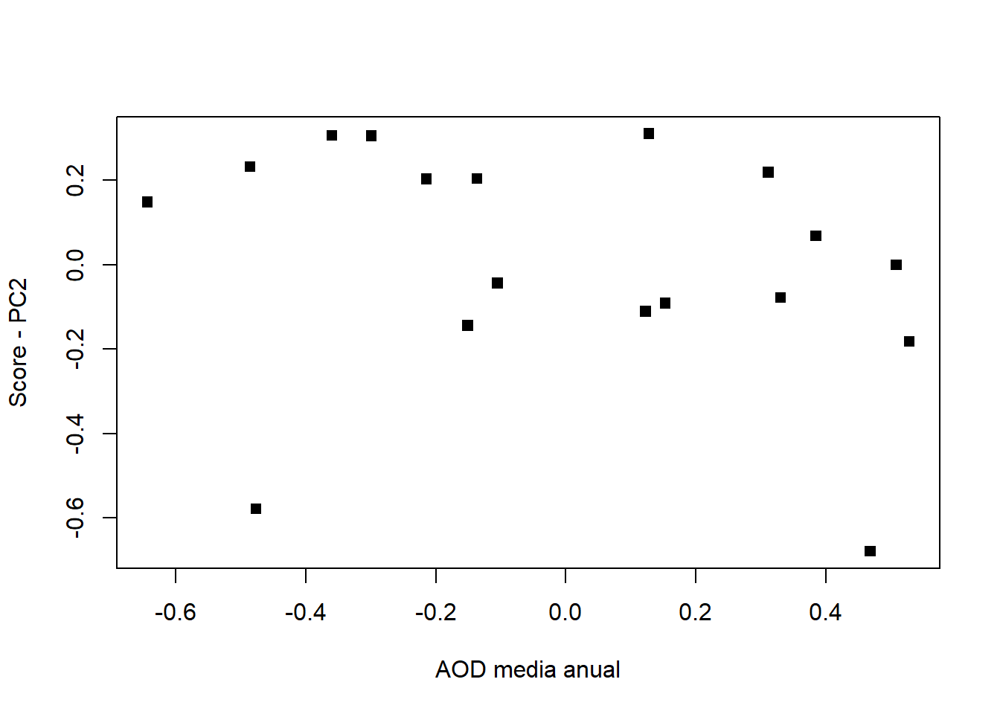
- Debido al comportamiento de los scores y su relación con el segundo componente, este no se puede interpretar o su interpretación es compleja.
2.2.7 Humedad relativa
fpca_HR <- fpca.sc(base$HR, pve = 0.99)
cumsum(fpca_HR$evalues) / sum(fpca_HR$evalues)[1] 0.5638614 0.8026593 0.8806950 0.9385011 0.9870818 1.0000000labels <- c("PC1", "PC2", "PC3")
efn.HR <- fpca_HR$efunctions*sqrt(52)
eval.HR <- fpca_HR$evalues/52
scores_HR <- fpca_HR$scores
matplot(1:52, efn.HR[,1:3], col=rainbow(3),
type='l', lty=1, lwd=2,
ylab="", xlab="Semana epidemiológica")
legend("topleft",
legend = labels,
col = rainbow(3),
lwd = 1,
cex = 0.8,
bg = NA,
horiz = T,
box.lty = 0)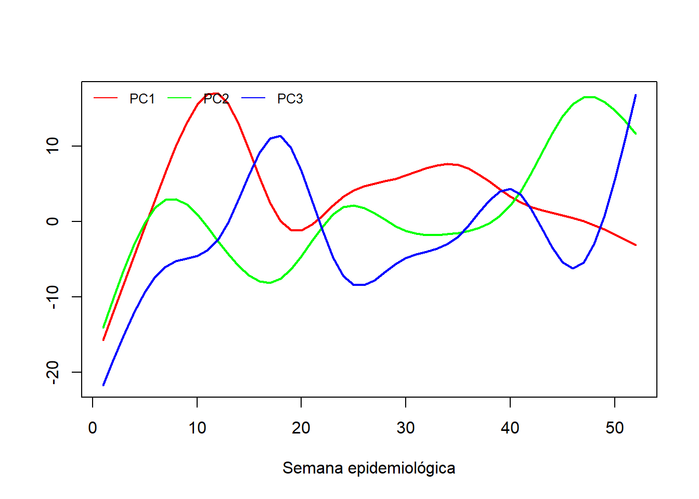
- Como se observa en la Figura 10, el primer componente es negativo de las semanas 1 a 5 y 45 a 52, y es positiva de las semanas 10 a 40. Años con puntajes más negativos tienen mayores porcentaje de humedad relativa en las semanas 1 a 5. Años con puntajes más postivos tienen mayores porcentajes de humedad relativa en las semanas 10 a 20.
plot(scores_HR[,1], scores_HR[,2],
xlab = "PC1", ylab = "PC2",
main = "Humedad relativa - PC1 vs PC2",
pch = 16, col = "blue")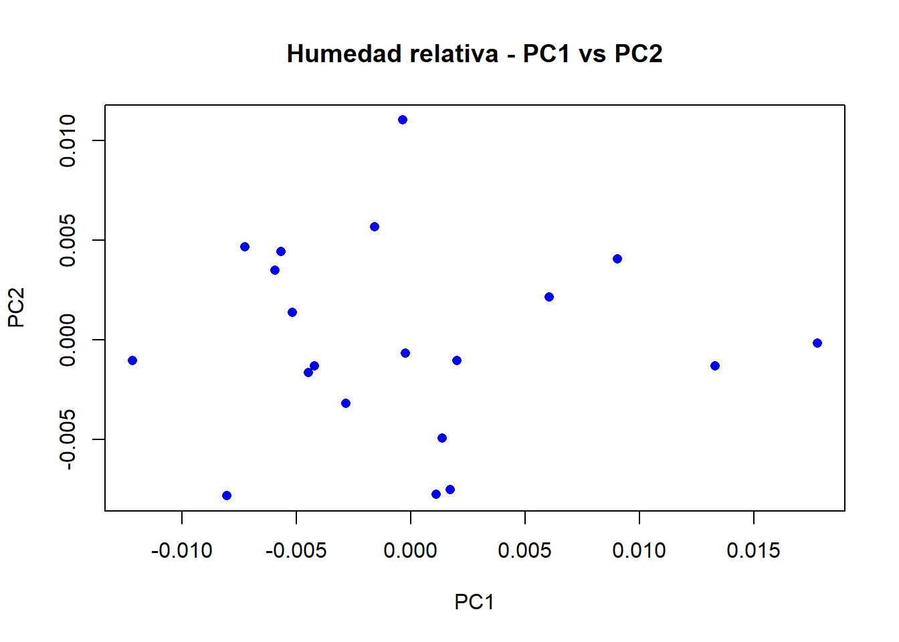
plot(rowMeans(base$HR), scores_HR[,1], type = "p", pch = 15, xlab = "Humedad relativa media anual", ylab = "Score - PC1")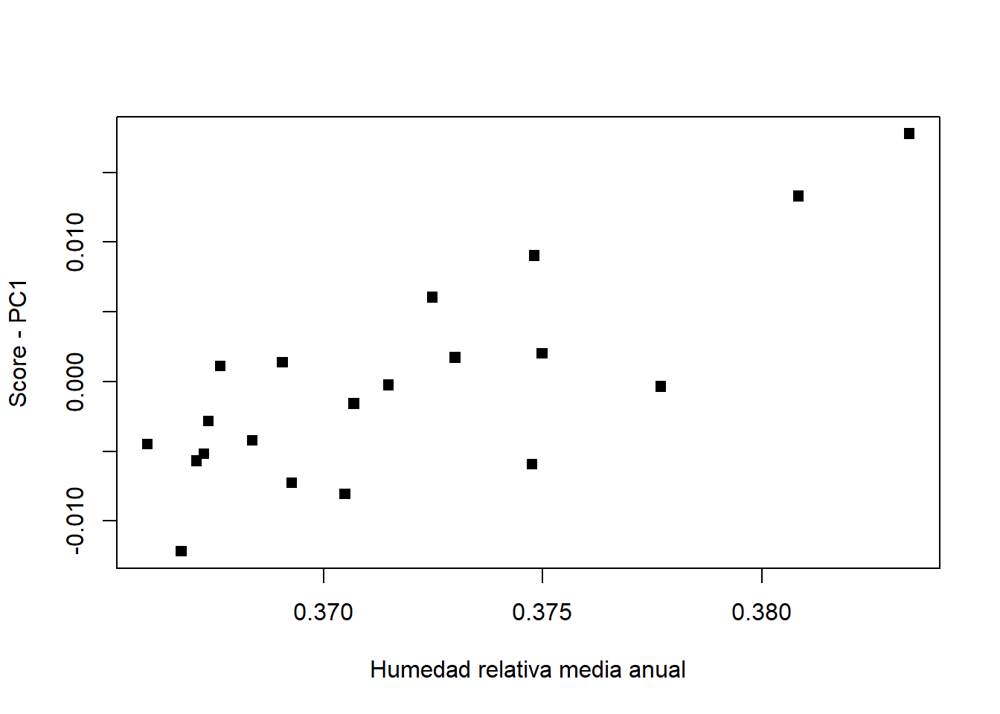
- Un mayor puntaje indica un mayor porcentaje de humedad relativa para el primer componente.
plot(rowMeans(base$HR), scores_HR[,2], type = "p", pch = 15, xlab = "Humedad relativa media anual", ylab = "Score - PC2")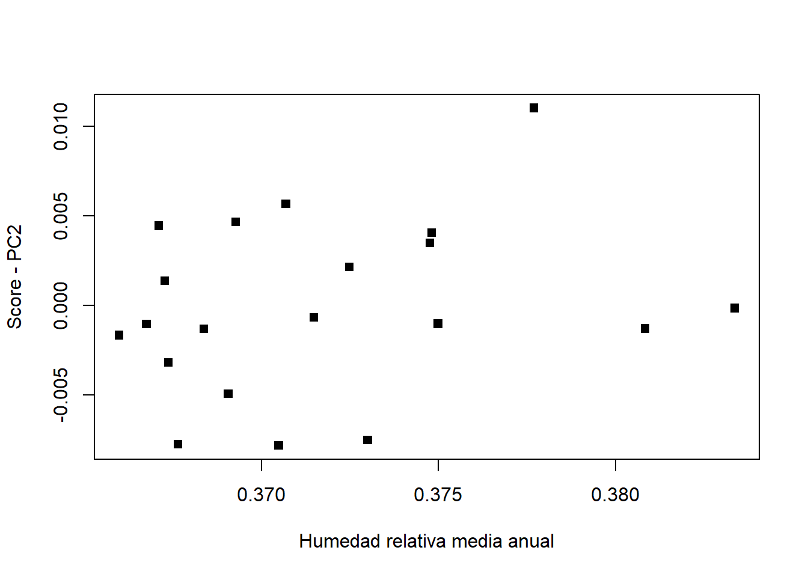
- Debido al comportamiento de los scores y su relación con el segundo componente, este no se puede interpretar o su interpretación es compleja.
Referencias
Xiao, L., Zipunnikov, V., Ruppert, D., & Crainiceanu, C. (2016). Fast covariance estimation for high-dimensional functional data. Statistics and Computing, 26, 409-421. https://doi.org/https://doi.org/10.1007/s11222-014-9485-x